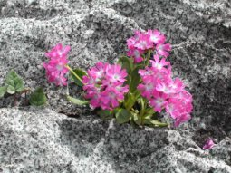

Plants The wealth and variety of plants and vegetation found in the Adamello Brenta Nature Park are equalled in only a few other parts of the Alps.The presence of two separate sectors with different geological characteristics (the calcareous-sedimentary rocks of the Brenta chain and the intrusive crystalline rocks of the Adamello-Presanella) has encouraged the natural development of endemisms and characteristic plant associations and this is particularly evident in the bands of vegetation above the tree line.
From the valley floor and the mountain slopes covered by vast forests to the high Alpine meadows where the pioneer plants defy the harsh conditions, intense cold and winds and where the last flowers cling tenaciously to the rocks, the entire plant landscape of the Park is of great interest to naturalists and of considerable visual impact. "Junior Ranger" diplomas will be presented.
- Forests
- Grasslands
- Rhododendrons